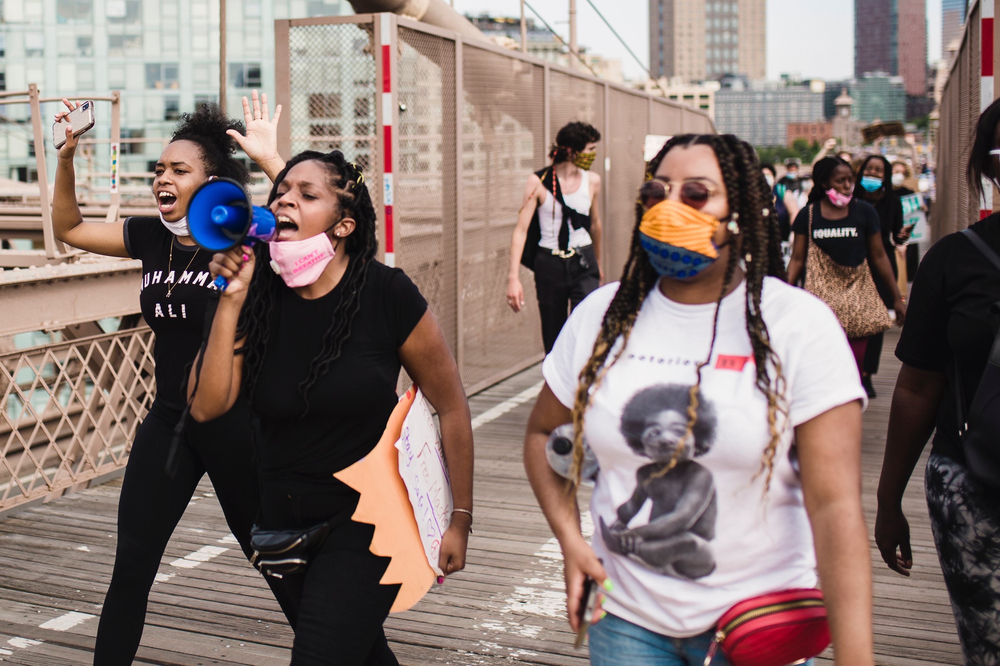
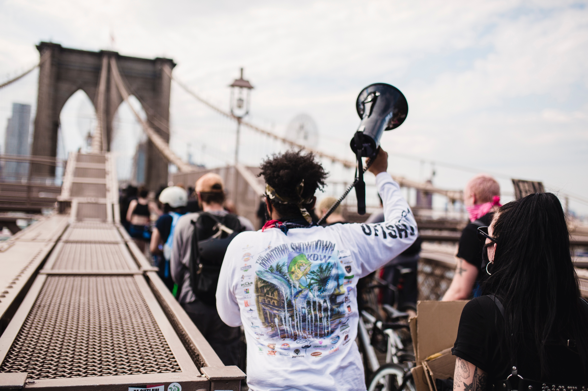
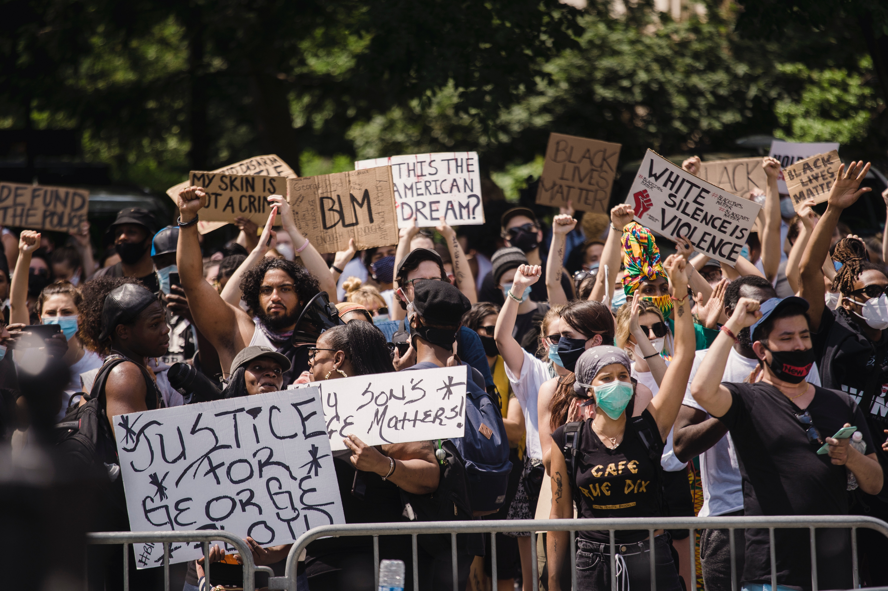

Black Lives Matter was founded in 2013 and the Black Lives Matter Global Network Foundation, Inc. is devoted to dismantling systemic racism and white supremacy groups. This organization provides resources to help Black communities by creating an environment of acceptance and inclusion on social media and other similar platforms.

History
Although BLM was founded by just three organizers, it has grown into a global network of over 40 chapters.

Conflict
There is sometimes conflict in protesting but the BLM movement is set on ensuring that people are as mindful as possible when resolving these conflicts.

Organize
With an increasing amount of political change, it is more important than ever to get organized when fighting for liberation.
